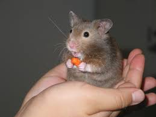

Hamsters are prey animals with very poor eyesight. At PurrPets, we teach you how to speak "Hamster" so you can turn a shy hider into a confident explorer!

| Behavior | What It Means | The PurrPets Tip |
|---|---|---|
| Stretching/Yawning | "I'm relaxed and comfortable." | This is the best time to offer a treat! |
| Freezing Dead Still | "What was that noise? Am I safe?" | Stay very still until they start moving again. |
| Grooming in Public | "I feel safe in my environment." | A great sign of a happy, settled hamster. |
| Bar Biting | "I'm stressed/bored! My cage is too small." | Upgrade their space or add more enrichment immediately. |
| The "Screech" | "I'm terrified! Back off!" | Give them space. Never force interaction if they scream. |
Don't rush! At PurrPets, we recommend the Slow & Steady approach:
Hamsters explore the world with their teeth. If they give you a gentle "test nibble," they are just checking if you're a giant carrot. If they bite, it's usually because your hands smell like food or you startled them. Wash your hands before and after handling!